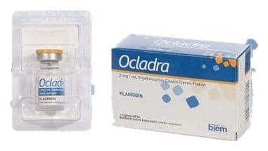

Ocladra 2 mg/ml Enjeksiyonluk Çözelti İçeren Flakon, Flakon, 1 Adet

Ne için kullanılır
KT · Bölüm 1 OCLADRA, etkin madde olarak, 5 mL çözeltide 10 mg kladribin içerir OCLADRA, berrak, renksiz bir çözelti olup 5 mL enjeksiyonluk çözelti içeren bir flakonluk ambalaj ile kullanıma sunulmaktadır. OCLADRA sitostatik (özellikle kanserli hücrelerin çoğalmasını önleyen) bir ajandır. Tüylü hücreli lösemi hastalığında rolü olan malin (kanserli) akyuvar hücrelerinin büyümesini etkiler. OCLADRA bu hastalığın tedavisi için kullanılır.